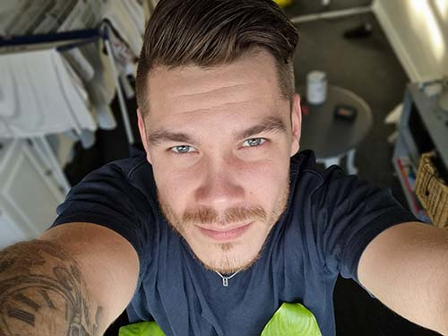
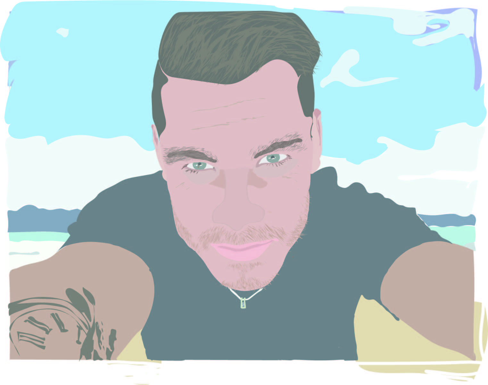

Velkommen til min hjemmeside der handler om mig som person i erhvervslivet. Rundt på siden finder du forskellige cases der er udarbejdet af mig selv. Selv om at det ikke er min stærke side, så har jeg alligevel formodet at kode denne hjemmeside fra bunden med formålet om at promovere hvad jeg står for


Når jeg får lov til at sidde og nørde med Adobe Photoshop eller Adobe Illustrator, er der ingen grænser for hvor længe at jeg kan sidde og fordybe mig i et projekt. Jeg elsker grafisk design, men jo længere at jeg kommer i uddannelsen, jo bedre synes jeg om at arbejde med de forskellige medier der findes.
Multimedie under uddannelse..
Niveauet er stadig ikke særlig højt, men når at man tager i betragtning at jeg startede på uddannelsen for 3 måneder siden, hvor at man var helt på bar bund, så synes jeg at der er sket en stor udvikling.
Ved siden af ses en slider med forskellige billeder af arbejde jeg har færdiggjort igennem tiden på Multimediedesigneruddannelsen.